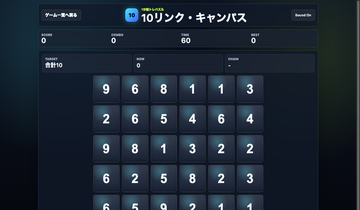

数字カードをクリックして合計10を作る無料ブラウザ数字パズルゲームです。1分で遊べるスマホ対応の脳トレゲームです。
1分ゲーム / 短時間ゲーム
休憩時間や通学中に、1プレイだけ気軽に遊べる無料ブラウザゲームを集めました。
1分ゲームは、読み込みが軽く、ルールをすぐ理解でき、もう一回だけ遊びたくなるテンポが大切です。

数字カードをクリックして合計10を作る無料ブラウザ数字パズルゲームです。1分で遊べるスマホ対応の脳トレゲームです。

8レーンに流れるノーツを叩く無料ブラウザリズムゲームです。ランダム譜面と5段階レベルで遊べる音ゲーです。